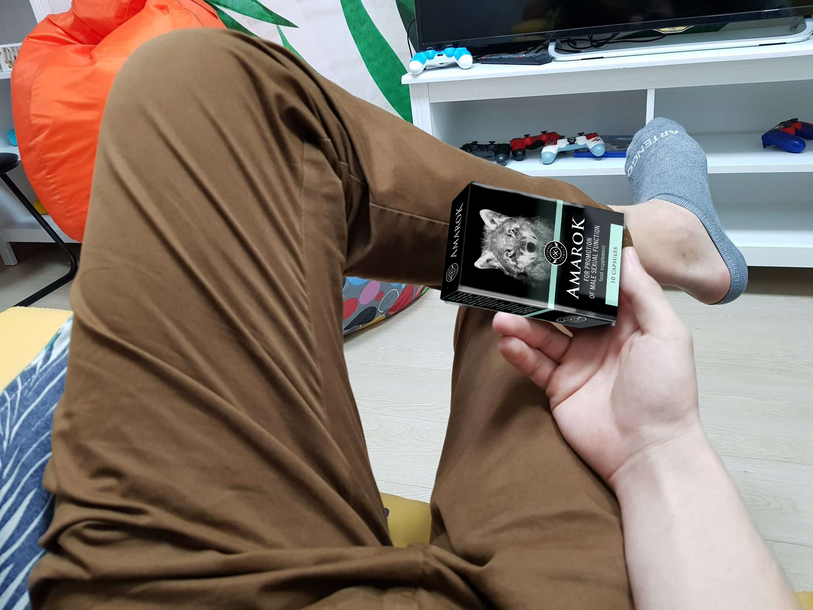

Párkapcsolatok
Egy jól bevált módszer, hogyan lehetünk mindig csőre töltve, avagy hogyan szerezzük vissza az erekciót bármely életkorban
Szevasztok, srácok.
Na, ki akart valami pikáns sztorit hallani? Vegyetek elő egy jegyzetfüzetet és zsebkendőt arra az esetre, ha nagyon szíven érintene egy harmincöt éves alfahím története, akinek a férfierénye elkezdte őt cserben hagyni, mert most megtudhatjátok a kőkemény merevedés receptjét.
Csak vicceltem, jegyzetfüzetre semmi szükség.
35 éves koromig elképzelésem sem volt arról, hogyan kerülhet egy mondatba a „szex” és a „probléma” szó. Ám az életnek nagyon sajátos humorérzéke van. Korábban csak nevetni tudtam azokon a balfékeken, akiknek nem jött össze a kaland, de most visszanyalt a fagyi és az élet nevet ki engem, méghozzá ördögi kacajjal
Az első kudarc
Pénteken meló után gondoltuk, átmegyünk egyik kollégámhoz meccset nézni. Én ugyan nem voltam nagyon feltüzelve, de azért a hazaszeretet jegyében én is elmentem, merthogy a mieink játszottak, így alkalom nyílt egy kis pohárürítésre is.
A buli nem sült el valami jól. Hogy valamiképpen megmentsük az estét, felajánlottam, hogy hívunk pár csaj és átmegyünk a szaunába.
Annyira bevállalósnak éreztem magam, hogy felhívtam a legsportosabb testű csaj ismerősömet, aki addig nem adta be a derekát, ezen az estén mégis úgy alakult, hogy bármire kapható volt.
A lányokat, beleértve az én Laurámat nem kellett sokáig kérlelni, egyből ránk vetették magukat. Szép lassan vízszintes testhelyzetbe kerültünk. Mindez csodálatos orális előjáték keretében zajlott… minden tökéletesen ment egészen addig, amíg Laura azt nem mondta: „Most már bassz meg”.
Én teljes mértékig benne voltam, de a farkam sehogy sem akart engedelmeskedni. „Mindjárt meglesz, mindjárt”, mantráztam, mint valami pattanásos kis tinédzser, aki már egy szép nő látványától képes azonnal elmenni.
Miután minden igyekezetem hiábavalónak bizonyult, hogy lekonyult cerkámat valahogy becsúsztassam, Laura parancsoló hangon kikérte magának, hogy ez meg mi a szar. Fogta magát, felöltözött és otthagyott, lehetőséget sem hagyva arra, hogy valami hülye mesét beadjak neki.

Alaposan benne voltam a pácban. Ez nem pusztán szégyen, nem csak egy kudarc, ez a legszarabb helyzet volt, ami valaha ért. Soha, de SOHA nem történt még velem ilyesmi.
Tudtam volna rá találni valamilyen magyarázatot, ha néhány héttel később ez a szarság nem történik meg újra. Majd egy hónap elteltével újra és újra. Totális volt a vereség.
Stressz? Nem is idegeskedtem. Alkohol? Nem is ittam. A korom? 35 éves vagyok! Elkezdtem kutakodni a megfejtés után, hogy kiderítsem a történtek okát, felmentem hát az internetre. Le voltam döbbenve.

A népszerű tudományos cikkek, mint az efféle kinyilatkoztatásokra jellemző, egyhangúlag azt állították, hogy az erekció kiszámíthatatlan dolog: ma még áll a cövek, holnap meg már az impotensek névtelen csoportjának tagja vagy.
Persze meglehet, hogy valamilyen oknál fogva egyszer nem áll fel, de ha már egyszer megtörtént, akkor bizony meg fog ismétlődni, ha nem teszed meg a szükséges lépéseket.
Mellesleg a Viagra nem tartozik ezen lépések közé. Ez a szintetikus szar nem csak függőséget okoz már az első tabletta után, de ha ezt szeded, jó úton haladsz az impotencia felé, amely aztán infarktussal végződik.
Miért nem állt fel a bré
Mint kiderült, rengeteg féle oka lehet. Az erektilis diszfunkció (ami maga az impotencia) folyamatosan alakul ki a következők hátterében:
- gyakori alkoholfogyasztás,
- helytelen táplálkozás,
- ritka magömlés (kevesebb, mint 3 naponta egyszer),
- elhízás (sörhas megjelenése),
- tesztoszteron szint csökkenése.
30 éves korára egy átlagos magyar férfinek a normálisnál kevesebb tesztoszteronja van. Ez kihatással van a szexuális teljesítményre, az együttlét időtartamára és minőségére.
Ha pedig gondolkodás nélkül Viagrával és hozzá hasonló szintetikus gyógyszerekkel tömjük magunkat, akkor még ha nem is oly gyakran, de 40 éves korra a pénisz szinte teljesen életképtelenné válik.

Mellesleg a tesztoszteron nem csak a szexért és a merevedésért felelős, hanem a férfias kinézetért is. Azok a férfiak, akik úgy néznek ki, mint egy húsgolyó nagy lógó mellekkel, az esetek 80%-ában a túl alacsony tesztoszteron szintnek köszönhető.

Keresésem közben rátaláltam egy fórumra, ahol mindenféle korú és alkatú férfiak osztották meg tapasztalataikat és kísérletezéseiket.
Leszámítva a sok hülyeséget, sokan a Viagrát és hasonló tablettákat vitatták meg, de olyan természetes és biztonságos készítményekről is szó esett, mint az , amely ráadásul még hasznos is a szervezet számára.
Az okosok azt mondják, hogy ez a szer bevált és tényleg működik. Két kapszulát beveszel, és 15 percen belül megkapod a kívánt hatást. De legjobb végig szedni, napi egy tabletta 4-6 héten keresztül, hogy növeljük a szervezet egészének tónusát és még jó néhány évig egyáltalán nem kell aggódni a kőkemény merevedés miatt.
Én nagyfokú felelősséggel álltam a dologhoz, így egyből 5 tasakot vettem a teljes kúrához.
A második héten nagy örömömre reggeli erekcióm volt, amelyet korábban egy-egy nagyobb ivászat után nem tapasztaltam. Annyi energiám volt, hogy az egész várost megbasztam volna, nem is tudtam volna visszafogni magam.
Mindent elsöprő győzelem
Neki is láttam, hogy kerítsek egy csajt éjszakára és betértem egy kocsmába, ahol megláttam Laurát. Igen, arról a ribancról van szó, akivel az egész sztori kezdődött.
Úgy tett, mintha mi sem történt volna, én meg csak vártam, mikor hozza fel azt az estét, nagyon izgultam, 10 korsó sört legurítottam. Felbátorodva felhívtam magamhoz, hogy nálam folytassuk az estét.
Nem tudom, mire számított, de beleegyezett. A történet ugyanis ugyanúgy ismétlődött egészen addig a percig, amikor a dugásra került a sor.
Ezúttal viszont nem csak, hogy nem állt fel: kőkeményen állt a bré, annak ellenére, hogy nem kevés piát megittam és a kudarctól való félelem is rögtön szertefoszlott, amint megjött Laura első orgazmusa.
Ilyen vad, nedves és hosszan tartó szex-maratonban már régen nem volt részem. Minden úgy történt, ahogy a fórumon írták: magömlés kontrollálása, hosszan tartó erekció, kitartás – minden porcikámban éreztem a tesztoszteron lüktetését.
Teljes volt a siker és persze nem az egyetlen. Több mint fél év telt el azóta, hogy befejeztem az szedését. Ez idő alatt egyetlen kudarc sem ért, függetlenül attól, milyen állapotban voltam.
Hogyan juthatunk hozzá az -hez
Most jön a legérdekesebb. Az a hír járja, hogy fénysebességgel nő a kereslet a tabletta iránt. Ezzel kapcsolatban van egy jó és egy rossz hírem. A rossz az, hogy hónapokon belül felemelik az árát. A jó hír pedig az, hogy 2019.12.30-ig az gyártójának hivatalos oldalán egyetlen csomag áráért az egész kúra megvehető. Ajánlom, hogy vegyetek belőle, hogy aztán ne kelljen miatta izgulni.
már annyiszor hallottam erről a kiegészítőről. én is gondolkozom rajta, nehogy az legyen, hogy nekem se álljon fel
ember, ez a 21-ik század! már régen minden természetes és milliószor tesztelték! bár én személy szerint leszarom) én is ezt szedem 200%, hogy használ
basszus, ezt az -et keresem már egy éve!!! egyszer próbáltam, pótolhatatlan cucc, egy csomó vitamin egyetlen kapszulában. hihetetlen erős, úgy áll mint 15 évesen! köszönöm a cikket!
A napokban rendeltem egy doboz -et hogy növeljem a tónust, meglátjuk mi sül ki belőle.
remek cucc:))) a feleségemmel gyűrjük a lepedőt rendesen, de nekem háromszor egy éjjel meg se kottyan.
jó kis cikk! ti aztán biztos nem ajánlotok szart, veszek is 5 csomaggal. akciósan tényleg nagyon olcsó
borzasztóan menő cucc, két órán át szexelek, amíg ki nem terülök az élvezettől:)))
régebben ezt a cuccot csak amerikai oldalról lehetett beszerezni, de most már nálunk is van érdeklődés iránta:) ideje volt